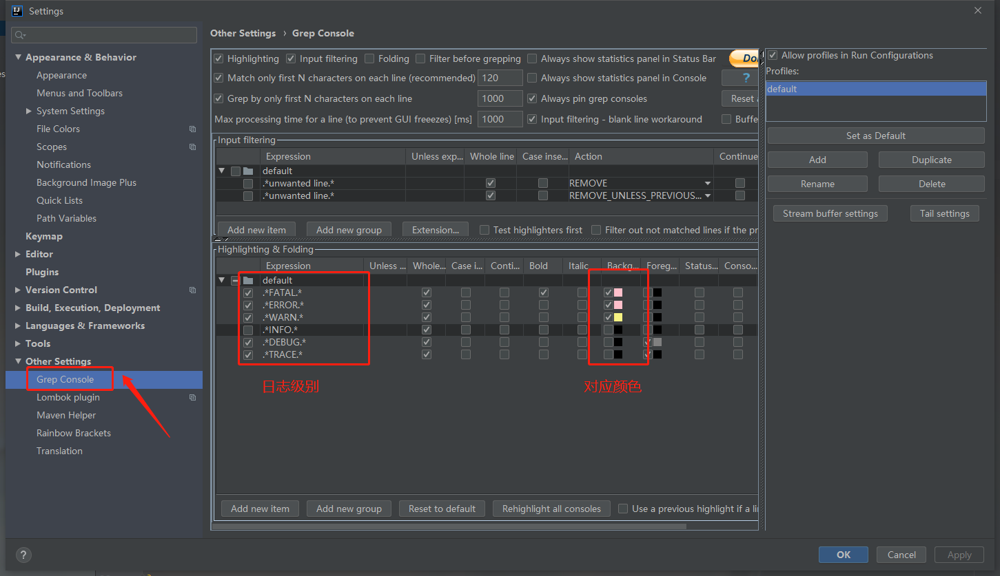

原文连接:https://www.cnblogs.com/keatsCoder/p/11491305.html
建议收藏-电脑重装后，开发软件Idea的配置，看这篇就够了
IDEA下载安装
目前的最新版本是 2019.2 ，大家可以直接去官网下载，或者选择自己用习惯的历史版本
下载地址：
https://www.jetbrains.com/idea/download/other.html
下载完成之后，需要付费后才能正常使用。建议大家支持正版。当然我这里也记录了一些共享的资源，地址:
https://www.jiweichengzhu.com/article/eb340e382d1d456c84a1d190db12755c
插件安装
IDEA 的一个强大之处就是支持各种各样的插件，这里我推荐我安装的插件，每个都有其使用价值，大家可以按需取用(建议全装！！！)

安装方法如下：
点击 File -> Setting -> 搜索框输入 plugins 接下来如图。
插件安装完成后，需要重启 IDEA ，这里建议大家一次性安装完所有的插件之后进行再重启，节省时间
下面我对我已装的插件进行介绍：
Background Image Plus
见名知意，这是一款用于修改编辑器背景图片的插件。使用方法：按照下图的提示，选择自己喜欢的图片即可
Gitee
这个是因为我们项目中使用了码云作为公共服务器，因此需要安装它。省去了输入 Git 命令和使用小乌龟操作的麻烦
Grep Console
设置控制台 Log 日志不同级别的日志字体颜色，在 File -> Settings -> Other Settings 中选择，然后为对应的日志级别设置自己喜欢的颜色

Idea Restart
顾名思义，这款插件弥补了 IDEA 不能重启的不足，安装后可以使用快捷键 Ctrl+Alt+R 重启，或者点击 File -> Restart 重启
Lombok
Lombok是一个Java库，能自动插入编辑器并构建工具，简化Java开发。通过添加注解的方式，不需要为类编写getter或eques方法，同时可以自动化日志变量。但是在使用 log 时，IDEA 自检查会飘红，虽然运行没有问题。但飘红总让人看着不爽。安装 Lombok 插件即可解决
Maven Helper
分析依赖冲突的神器，可以用来很方便的显示 Maven 依赖树。快速查找和排除项目中冲突的依赖
- Refresh UI 刷新页面
- Reimport 重新加载jar包
- Conflicts 查看冲突
- All Dependencies as List 列表形式查看所有依赖
- Show GroupId 显示组名
- All Dependencies as Tree 树形式查看所有依赖
对于冲突的依赖，可以鼠标右键单击，选择 Exclude ，插件会在 pom.xml 中自动添加排除依赖的标签
<exclusions>
<exclusion></exclusion>
</exclusions>同时，在项目上右击鼠标也添加了 Maven 的生命周期方法，可以进行更快速的 Clean Install
Mybatis Log Plugin
Mybatis现在是java中操作数据库的首选，在开发的时候，我们都会把 Mybatis 的脚本直接输出在console中，但是默认的情况下，输出的脚本不是一个可以直接执行的。如果我们想直接执行，还需要在手动将预编译的 sql 拼接一下，如果参数比较少还好，如果多了可就十分费事了。MyBatis Log Plugin 这款插件是直接将 Mybatis 执行的 sql 脚本显示出来，无需处理，可以直接复制出来执行的。查看 SQL 的位置如下：注意完整的 SQL 不是直接在控制台展示的需要按图示手动查看
Mybatis Plugin
IDEA 本身不支持 Java Mapper 接口中方法到 xml 文件的跳转，在 Maven 项目中， mapper 接口在 src 目录下， xml 文件在 resources 目录下，来回跳转十分麻烦，而有了Mybatis Plugin 麻烦将成为过去，
不废话，看图，点击左边的蓝色小箭头可以直接跳转到 xml 文件对应的 sql 中
Rainbow Brackets
让你在编辑器也可以看见彩虹
Transale
翻译插件，不仅有强大的翻译功能，还可以直接输入中文进行翻译和替换。如演示图，是不是很方便呢？
一些阿里代码手册需要配置的内容
手册我使用的是最新版《Java开发手册1.5.0 华山版》
对于设置的项目，有人可能说仅对当前项目生效，这时我们可以在这里设置，保证他永久有效：
10.【强制】IDE 的 text file encoding 设置为 UTF-8; IDE 中文件的换行符使用 Unix 格式，不要使用 Windows 格式。
text file encoding 设置方法如下
中文件的换行符设置方法如下
缩进设置为4个空格
- 【强制】单行字符数限制不超过 120 个，超出需要换行，换行时遵循如下原则：
1）第二行相对第一行缩进 4 个空格，从第三行开始，不再继续缩进，参考示例。
2）运算符与下文一起换行。
3）方法调用的点符号与下文一起换行。
4）方法调用中的多个参数需要换行时，在逗号后进行。
5）在括号前不要换行
其中，在 IDEA 的编辑页面，最右侧在第 121 个字符后面会有 1 条竖线，我们可以利用该竖线来确定单行是否到达了 120 个字符。同时这样也方便我们阅读代码
快速生成method方法注释
配置方法
- 打开Idea ---> Settings , 搜索 live
- 点击右边的 + 号，创建模板组 Template Group，之后再创建模板 Live Template ， 模板名 *
这里我们使用 * 作为模板名称，并且在模板中采用未缩进的 * 来作为首行内容。方便我们在创建方法的时候使用 /* 然后 tab 来创建方法注释。这样我们并不需要更改操作习惯。是不是感觉更加方便的呢！
- 模板内容如下：
*
* 功能：$end$
*
* $VAR1$
$params$* @return $returns$
* @author Keats
* @date $date$ $time$
*/在模板中使用 $变量名$ 定义变量之后，就可以在右边的 Edit Variables 中编辑变量内容了
这里方法名都是望文生义的，我就不过多解释，var1 变量的脚本代码如下：
groovyScript("
def result='';
def params=\"${_1}\".replaceAll('[\\\\[|\\\\]|\\\\s]', '').split(',').toList();
for(i = 0; i < params.size(); i++) {
if(i!=0)result+= ' * ';
result+='@param ' + params[i] + ((i < (params.size() - 1)) ? '\\n' + '\\t' : '');
};
return result", methodParameters())将这段代码粘贴到输入框，按 Enter 确认后，OK保存。
- 最后，在设置该模板在 EveryWhere 有效